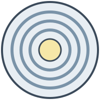

Skerry Point, a tower that exists only in this example.
For more than a century the light at Skerry Point has turned every night, from dusk to dawn, whatever the weather. Ships far out at sea know it by its rhythm: three white flashes, then darkness, then three flashes again. No other light on the coast keeps the same count, so a navigator who sees it knows where the ship is without asking anyone.
The tower itself is unremarkable. It is a tapering cylinder of stone, painted white with two red bands so that it stands out against the hills by day. What makes it a lighthouse is the room at the top, where a lamp no brighter than a few household bulbs is turned into a beam that reaches the horizon.

The heart of the tower is not the lamp but the lens around it. A Fresnel lens breaks one heavy curved glass into a set of thin rings, each bending the light by the same amount as the solid lens would. The result is light enough to turn on a bed of mercury and strong enough to gather almost every ray of the lamp into a narrow beam.The rings are ground so precisely that the beam spreads by less than a degree. Turned by clockwork, the lens sweeps the beam over the sea, and the gaps between its panels make the flashes. The keepers wound the clockwork by hand every few hours and polished the glass every morning.
Today a sensor switches the light on at dusk and a small motor turns the lens. The flashes are the same as in 1874.